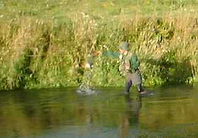

君よ知るや南の国
南ワイカトのスプリングクリークにて（５）
皆様、こんにちは。 ニュージーランド北島のハミルトンからお届けします「君よ知るや南の国」です。
日本では、サクラの花が満開で、大勢の方が花見を楽しんだようですが、皆様いかがお過ごしでしょうか？ ハミルトンは雨のたびに気温が下がり、秋が深まってきています。
今回はスプリングクリークの鱒釣りの最終回、その５をお届けします。
2001年１月14日 南ワイカトのスプリングクリークにて（５）
対岸側にある岩盤にティペットを擦られて切られないよう、なんとか魚体をこちら岸に寄せるべくプレッシャーを掛けながら川を下る。流れを利用して抵抗する鱒は、4-5番指定のパックロッドをぐいぐいと軋ませる。それでもだましだまし20mほど下ったところに水草の切れ目ができており、流れが緩いことが見て取れたので、そこに鱒を誘導しようと試みる。
ティペットの限界近くまで力を掛けて引き寄せると、鱒は、流れに対して体を斜めに向け、なおも下流へ向かおうと渾身の力で抵抗する。ドラグが、ジジジリリリリと音を立てラインが再び引き出される。ここで取り込むことができないと、次に可能性のあるのは、さらに30mほど下った対岸のポケットしかない。さらに、その近辺には沈木の枝や丸太の水制工が突きだしており、やっかいなことになりそうである。
やや強引ではあったが、少し弱ってきた鱒をなんとかその場に止め、顔が水面に出てきたのが見えたので、思い切って取り込むことにする。日本の渓流用に作ったネットでは、いささか小さすぎるのだが、別の大きいネットは持ち歩くには少々大きすぎるのである。
よ～いしょっ！ という感じで鱒を引き寄せ、頭の方から慎重かつ大胆に、一気に網を差し出す。一瞬、波紋が起こり、手の中に重量と安堵とが収まった。

「やったーっ！」
「おーっスゴイスゴイ！！」
対岸で一部始終をカメラで写してくれていたＮ君が、祝福の言葉をかけてくれる。40cmを少し越えたぐらいの鱒が、ネットの中でバタバタと暴れた。
さて、次はＮ君の番である。再び忍び足でさっきの淵に戻ってみると、何事もなかったかのように No.1とNo.3とが、悠々と餌をあさっているのが見える。ルアーで挑むＮ君が、下流側の流れに立ち込み、静かにポジションに陣取った。ロッドの先には中ぐらいのスプーンが結んである。
満を持したキャストで放たれたスプーンが淵のちょうど真ん中に着水し、キラキラと閃きながら鱒の辺りを通過する。しかし、大きな影は動かない。二度、そして三度。どうやらＮ君のスプーンは、速い流れに負けて鱒の頭上を通り過ぎており、魚の興味を引くまでに至っていないようである。
「スピナーに変えた方がいいんじゃないの？」
彼よりは上流側に立ち、位置も高い所から見ていると、ルアーの動きや魚の反応の無さが、手に取るように分かる。まさに岡目八目、である。
慎重にルアーを結び変えたＮ君が、さっきまでよりも少し淵の奥にスピナーを投げ込んで、少しそのままで沈めた。淵の底近くに沈んだスピナーがリーリングによって回転を始め、鱒の顔の前を横切る。No.1の黒い影がぐらっと向きを変え、スピナーをくわえて再び上流側へ反転した。
Ｎ君の大きな合わせとともに黒い塊が淵の上に被さる灌木の茂みの下に、一瞬、遁走する。
「ジジジジーッ、プツッ......」
「あぁぁ～っ！ 切れたァっ！！！」
「あじゃぁ～！」
ドラグを鳴らして糸を引きだした鱒は、一瞬で茂みの暗がりに姿を消した。ラインが切られたのである。
「あっれーっ。やっぱりこの糸、弱いわぁ.....」
Ｎ君がちょっと前にハミルトン市内の釣具店で買ったそのラインは、確かに価格は安かったのだが、糸が縒れやすいのと、結節強度が小さいので、それまでにも数回、合わせ切れを起こしていたようである。
「うーん、やっぱり安モンはいかんかったか....」
がっくりうなだれているＮ君にかける言葉もなく、しばし岸辺に呆然と立ちつくす二人であった。（終わり）
次回は、ハミルトン近辺のドライブ事情についてお伝えします。ではまた。
君よ知るや南の国 目次へ
サイトマップ
ホームへ
お問い合わせ